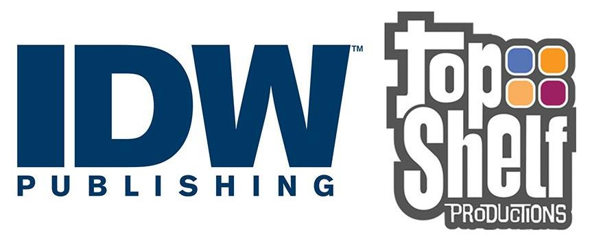

IDW Publishing is an American publisher of comic books, graphic novels, art books, and comic strip collections. It was founded in 1999 as the publishing division of Idea and Design Works, LLC (IDW), itself formed in 1999, and is regularly recognized as the fifth-largest comic book publisher in the United States, behind Marvel, DC, Dark Horse, and Image Comics. The company is perhaps best known for its licensed comic book adaptations of movies, television shows, and cartoons.
Top Shelf Productions is an American publishing company founded in 1997, originally owned and operated by Chris Staros and Brett Warnock and a small staff. Now an imprint of IDW Publishing, Top Shelf is based in Marietta, Georgia. Top Shelf publishes comics and graphic novels by authors such as Alan Moore, Craig Thompson, James Kochalka, Andy Runton, Jeffrey Brown, Nate Powell, Eddie Campbell, Alex Robinson, Jeff Lemire, and Matt Kindt.
Idea and Design Works (IDW) was formed in 1999 by a group of comic book managers and artists that met at Wildstorm Productions included Ted Adams, Robbie Robbins, Alex Garner, and Kris Oprisko for an outsource art and graphic design firm.
The company's first traditional comic series, 30 Days of Night, created by Steve Niles and Ben Templesmith started a seven-figure bidding war between DreamWorks, MGM, and Senator International, with Senator winning and Sam Raimi attached to produce. IDW Publishing's second title, Popbot, won two Gold Spectrum Awards.
IDW Publishing also publishes comics based on the TV franchises Star Trek and CSI. The company's other licensed comics include Topps' Mars Attacks, Sony's Underworld, FX' The Shield, Fox' 24, and Angel; Universal’s Land of the Dead and Shaun of the Dead; and Konami’s Silent Hill, Castlevania, Metal Gear Solid, and Speed Racer. The company has also had success with comic license from toy company Hasbro brands: The Transformers (with Takara), G.I. Joe, My Little Pony, and Jem. Transformers has had as many as five different titles running concurrently.
Beginning in 2008, the company licensed the Doctor Who series from the BBC, launching two concurrent titles: Doctor Who Classics, which reprints colorized comic strips featuring the past Doctors such as the Fourth Doctor and Fifth Doctor originally published in the late 1970's-early 1980's by Doctor Who Magazine, and Doctor Who: Agent Provocateur, an original six-part limited series featuring the Tenth Doctor and overseen and written by TV series script editor Gary Russell. An additional six-part limited series titled Doctor Who: The Forgotten started in mid-2008 by Tony Lee and Pia Guerra, as well as a series of monthly one-shot, self-contained stories. July 2009 saw the beginning of Doctor Who, an ongoing series featuring the Tenth Doctor, written by Tony Lee and illustrated by a rotating art team.
In 2010, IDW Publishing released the sequel to Michael San Giacomo's "Phantom Jack" Image Comics series with "Phantom Jack: The Nowhere Man Agenda." The graphic novel is notable because it features the death of the main character, a reporter who can turn invisible. IDW Publishing formed an imprint with EA Games in late 2009, called EA Comics, to focus on adaptations of the latter's video games, with initial titles including Army of Two and Dragon Age.
September 6, 2011, for the 10th anniversary of 9/11, IDW Publishing teamed up Charlie Foxtrot Entertainment and released the graphic novel Code Word: Geronimo, written by retired Marine Corps Captain Dale Dye and Julia Dye, drawn by Gerry Kissell with inker Amin Amat. Code Word: Geronimo reached #22 on Diamond Comics top 100 list its first month after release. During that same year, the company has published its first crossover series Infestation.
In March 2012 IDW Publishing announced it would release new comics based on Judge Dredd and The Crow. Also in 2012, Hasbro licensed the use of My Little Pony: Friendship Is Magic for an IDW comic book series. The company has also published Infestation 2. In February 2013, IDW Publishing announced a partnership with Cartoon Network to publish comics based on the network's television series and reprint older Cartoon Network comics.
On January 6, 2015, IDW Publishing announced it had acquired Top Shelf Productions. In February 2015, it was announced that IDW Publishing made a deal with Disney to continue the publication of the following comic books: Uncle Scrooge, Donald Duck, Mickey Mouse, and Walt Disney's Comics and Stories.
In 2016, IDW launched the Hasbro Reconstruction initiative to present a shared universe of Hasbro brands, which was later known as the Hasbro Comic Book Universe. The first event was Revolution, followed by First Strike on 2017. In July 2017, Sega announced a partnership with IDW to publish comics based on Sonic the Hedgehog beginning in 2018, following the conclusion/cancellation of the previous series by Archie Comics.
24: Cold Warriors #1 February 2008
24: Midnight Sun #1 July 2005
24: Nightfall #1–5 October 2005 – March 2006
24: One Shot #1 July 2004
24 Stories #1 January 2005
24 #1 April 2014
30 Days of Night #1–3 August – October 2002
30 Days of Night: 30 Days 'Til Death #1–4 December 2008 – March 2009
30 Days of Night: Annual 2004 #1 January 2004
30 Days of Night: Annual 2005 #1 December 2005
30 Days of Night: Beyond Barrow #1–3 September 2007 – February 2008
30 Days of Night: Bloodsucker Tales #1–8 October 2004 – May 2005
30 Days of Night: Dark Days #1–6 June – December 2003
30 Days of Night: Dead Space #1–3 January – March 2006
30 Days of Night: Eben and Stella #1–4 May – August 2007
30 Days of Night: Red Snow #1–3 August – October 2007
30 Days of Night: Return to Barrow #1–6 March – August 2004
30 Days of Night: Scriptbook #1 October 2007
30 Days of Night: Sourcebook #1 January 2007
30 Days of Night: Spreading the Disease #1–5 December 2006 – April 2007
Adventures in Oz #1 February 2006
Aleister Arcane #1–3 April – June 2004
Angel: After the Fall #1–17 December 2007 – February 2009
Angel: Auld Lang Syne #1–5 November 2006 – March 2007
Angel: The Curse #1–5 June – October 2005
Angel: Masks #1 October 2006
Angel: Old Friends #1–5 November 2005 – March 2006
Angel Scriptbook #1–7 January – July 2006
Angel Spotlight: Connor #1 August 2006
Angel Spotlight: Doyle #1 July 2006
Angel Spotlight: Gunn #1 May 2006
Angel Spotlight: Illyria #1 April 2006
Angel Spotlight: Wesley #1 June 2006
Art of Armitage #1
Art of Tommy Lee Edwards #1
Ascend: Special Edition #1 January 2008
Atomic Robo
A-Team: War Stories 4 2010
A-Team: Shotgun Wedding #1–4 March – April 2010
Badger: Bull! #1 November 2007
Back to the Future #1- October 2015 – ongoing
Badger Saves the World #1–5 December 2007 – April 2008
Battle Beasts #1–4 July – October 2012
Bigfoot #1–4 February – May 2005
Blood Stained Sword #1 January 2005
Castlevania: The Belmont Legacy #1–5 March – July 2005
Chiaroscuro #1 November 2007
Chicanos #1–8 November 2005 – June 2006
Children of the Grave #1 December 2007
The Claws Come Out #1 November 2007
Clive Barker's The Great and Secret Show #1–12 March 2006 – May 2007
Clive Barker's The Thief of Always #1–3 January – May 2005
Cobb: Off the Leash #1–3 May – July 2006
Comic Book History of Comics July 2012
The Complete Jon Sable: Freelance #1 April 2005 – September 2007
The Complete Wynonna Earp #1 2005
Crawl To Me #1–4 June – October 2011
CSI: Bad Rap #1–5 August – September 2003
CSI: Demon House #1–5 February – July 2004
CSI: Dominos #1–5 August – December 2004
CSI: Dying in the Gutters #1–5 October 2006 – February 2007
CSI: Miami #1 January 2005
CSI: Miami – Blood/Money #1 September 2004
CSI: Miami – Smoking Gun #1 October 2003
CSI: Miami – Thou Shalt Not... #1 April 2004
CSI: NY - Bloody Murder #1–5 July – November 2005
CSI: Secret Identity #1–5 February – June 2005
CSI: Serial #1–5 September 2003
CSI: Thicker Than Blood #1 July 2003
CVO: African Blood #1–4 September 2006 – May 2007
CVO: Artifact #1–3 October – December 2003
CVO: Covert Vampiric Operations #1 May 2003
CVO: Human Touch #1 August 2004
CVO: Rogue State #1–5 November 2004 – March 2005
Dampyr #1–8 April – July 2005
D4VE #1–5
D4VE2 #1–4
Dead, She Said #1–3 May – December 2008
Desperadoes: Banners of Gold #1–5 December 2004 – April 2005
The Devil's Rejects #1 January 2005
Dial M for Monster: A Cal McDonald Mystery #1 September 2003
Doctor Who #1–6 2008
Doctor Who Ongoing (Tenth Doctor) #1–16 2009
Doctor Who Ongoing (Eleventh Doctor) #1- Present 2011
Doctor Who Classics #1–10 2007
Doomed #1–4 October 2005 – December 2006
Dos Fantas: More Art of Ashley Wood #1 2002
Dracula's Revenge #1–2 April – May 2004
Dragon Age #1–6 March – November 2010
Dread Island #1 2011 limited hardcover
Dungeons and Dragons #0–15 August 2010 – February 2012
Dungeons and Dragons: Evil at Baldur's Gate April 2018 - ongoing
Easy Way #1–4 April – July 2005
Epilogue #1–4 October 2008 – January 2009
Eric Red's Containment[3] #1–5 January – May 2005
Everybody's Dead[4] #1–5 March – July 2008
Fallen Angel #1–33 December 2005 – December 2008
First Strike #0–6 August – October 2017
FX #1–6 March – August 2008
G.I. Joe #0–27 October 2008 – February 2011
G.I. Joe: Cobra #1–4 March – June 2009
G.I. Joe: Operation Hiss #1–4 February – May 2010
G.I. Joe: Origins #1–23 February 2009 – January 2011
G.I. Joe: The Rise of Cobra: Official Movie Prequel #1–4 March – June 2009
G.I. Joe: The Rise of Cobra: Official Movie Adaptation #1–4 June 2009
G.I. Joe: Snake Eyes #1–4 October 2009 – January 2010
G.I. Joe Special: Helix #1 August 2009
G.I. Joe Special: Cobra #1 September 2009
Gene Pool #1 October 2003
George A. Romero's Dawn of the Dead #1–3 2004
George A. Romero's Land of the Dead #1–5 2005–2006
Godzilla: Kingdom of Monsters #1–12 2011–2012
Godzilla: Gangsters and Goliaths #1–5 2011
Godzilla: Legends #1–5 2011–2012
Godzilla (Ongoing) #1–13 2012–2013
Godzilla: The Half-Century War #1–5 2012–2013
Ghostbusters: The Other Side #1–4 2008–2009
Ghostbusters: Displaced Aggression #1–4 September – December 2009
Ghostbusters: Past, Present, Future #1 2009
Ghostbusters: Tainted Love #1 2010
Grand Fanta: The Best of Ashley Wood June 2004
Grimjack: Killer Instinct #1–6 January – June 2005
Grimjack: The Manx Cat #1–6 August 2009 – January 2010
Groom Lake[5] #1–4 March – July 2009
Grumpy Old Monsters #1–4 November 2003 – March 2004
Guns, Drugs, and Monsters: A Cal McDonald Mystery February 2005
Gutter Magic #1-4 January 2016 - April 2016
Hairball: A Cal McDonald Mystery #1 October 2002
Haven: After the Storm September 3, 2013
Haven: In the Beginning August 26, 2014
Heartbreakers Meet Boilerplate[6][7] August 2005
Horrorcide #1 September 2004
HYDE #1 October 2004
IDW Poster Book
IDW Sampler
IDW Tales of Terror September 2004
Infestation
Invasion '55 #1–3 October 1990 – May 1991
Jem and the Holograms Mar. 25th, 2015 – Ongoing
Jericho: Season 3 #1–6 Nov. 25th, 2009 – 2011
Jericho: Season 4 #1–2 2012 – Ongoing
Jon Sable, Freelance: Ashes of Eden #1–5 October 2009 – February 2010
Jon Sable, Freelance: Bloodtrail #1–6 April – November 2005
Journey: The Adventures of Wolverine McAlistaire #1–27 March 1983 – April 1986
Judge Dredd(IDW Publishing)
Jurassic Park #1–5 June – October 2010
Jurassic Park: The Devils in the Desert #1–4 January – April 2011
Jurassic Park: Dangerous Games #1–5 September 2011– January 2012
Karney #1–4 July – September 2005
The Keep #1–5 September 2005 – March 2006
Kill Shakespeare #1– April 2010 – ongoing
Kull Eternal #1– June 2017 – ongoing
The Last Resort April 2010
The Legend of GrimJack
Legion
Legion: Prophets[10]
The Life and Times of Savior 28
Little Apple Dolls: Welcome to the Inbetween
Little Book of Horror: Dracula
Little Book of Horror: Frankenstein
Little Book of Horror: War of the Worlds
Locke & Key
Lore
Love is Love December 28, 2016
Lurid
The Lurkers
Mage Knight: Stolen Destiny
Mage Knight: Rebellion
Magic the Gathering (Comic) #1- November 2011 – ongoing
Mars IDW
Masters of Horror
The Maze Agency
Mean Streets March 2014
Metal Gear Solid
Metal Gear Solid: Sons of Liberty
Monster House
The Mummy: The Rise and Fall of Xango's Ax #1–4 April – July 2008
My Little Pony: Friends Forever #1-38 January 2014 – March 2017
My Little Pony: Friendship Is Magic #1- November 2012 – ongoing
My Little Pony: Micro-Series #1–10 February – December 2013
My Little Pony: Legends of Magic #1-12 2017 –2018
New Avengers/Transformers #1-4 July 2007 - October 2007
Night Mary #1–5 July – November 2005
Night Owl Society[14] #1–3 April – June 2017
Olympus Heights
Orphan Black #1–5 February 2015 – August 2015
Orphan Black: HELSINKI November 2015–
Optimus Prime #1–25 December 2016 – October 2018
Pandemica
Pantheon
Parker
The Pilgrim
Pirat Tales: Legend of the Cat O' Nine Tails
Popbot
Popbot Reader
Presidential Material
Pristeen16
Red Panda: Mask of the Red Panda 2014
Remains
Revolution #0–5 July 2016 – November 2016
Revolutionaries #1–8 January 2017 – July 2017
Richard Matheson's Hell House
Richard Matheson's I Am Legend
Road to Hell
Rom #1–14 May 2016 – November 2017
Rom & The Micronauts #1–5 December 2017 – May 2018
Rom: Dire Wraiths upcoming
Rom vs. Transformers: Shining Armor #1–5 July 2017 – November 2017
Saucer State
Savage Membrane: A Cal McDonald Mystery
Saw: Rebirth
Scarface: Devil in Disguise
Scarface: Scarred for Life
Secret Skull
Sencilla Fanta: Ashley Wood Sketchbook
Seven Block
Shadowplay
Shaun of the Dead
Shield: Spotlight
Silent Hill: Among the Damned 2004
Silent Hill: Dead/Alive 2005–2006
Silent Hill: Dying Inside 2004
Silent Hill: The Grinning Man 2005
Silent Hill: Hunger 2006
Silent Hill: Paint It Black 2005
Silent Hill: Past Life 2010
Silent Hill: Sinner's Reward 2008
Singularity 7
Slab
Smoke
Song of Saya 2010
Sonic the Hedgehog April 2018–ongoing
Sparrow: Ashley Wood
Speed Racer, Volume 1
Speed Racer, Volume 2
Speed Racer, Volume 3
Speed Racer, Volume 4
Speed Racer, Volume 5
Speed Racer: Chronicles of the Racer
Speed Racer: Racer X, Volume 1
Speed Racer and Racer X: The Origins Collection
Spike: After the Fall
Spike: Asylum
Spike: Shadow Puppets
Spike: Lost and Found
Spike: Old Times
Spike: Old Wounds
Spike vs. Dracula
Spookhouse
Squidder
Star Mage 6 April 2014 – Ongoing
Star Trek: Alien Spotlight
Star Trek: Assignment: Earth
Star Trek: Burden of Knowledge
Star Trek: Captain's Log
Star Trek: Countdown
Star Trek: Countdown To Darkness February 2013 – Ongoing
Star Trek: Crew
Star Trek: Deep Space Nine: Fools Gold
Star Trek: Klingons: Blood Will Tell
Star Trek: Leonard McCoy, Frontier Doctor
Star Trek: Mirror Images
Star Trek: Mission's End
Star Trek: Nero
Star Trek: New Frontier: Turnaround
Star Trek: Romulans: The Hollow Crown
Star Trek: Romulans: Schism
Star Trek: Spock: Reflections
Star Trek: The Next Generation: Ghosts
Star Trek: The Next Generation: Intelligence Gathering
Star Trek: The Next Generation: The Last Generation
Star Trek: The Next Generation: The Space Between
Star Trek: Year Four
Star Trek: Year Four: The Enterprise Experiment
Star Trek II: The Wrath of Khan
Star Trek Movie Adaptation
Star Trek vs Transformers
Steve Niles' Cellar of Nastiness
The Strange Death Of Alex Raymond: A Metaphysical History of Comics Photorealism
Strange Science Fantasy
Street Fighter x G.I. Joe and Transformers
The Suicide Forest
Super Bad James Dynomite
Super Deluxe Hero Happy Hour: The Lost Episode
Supermarket
Supernatural Freak Machine: A Cal McDonald Mystery
Swallow
Sword of Dracula
Tank Girl: The Gifting
Teenage Mutant Ninja Turtles (ongoing) August 2011 – present
That Hell-Bound Train
Tilting at Windmills
Tommyrot: The Art of Ben Templesmith
The Transformers #1–31 November 2009 – December 2011
Transformers March 2019
The Transformers: All Hail Megatron #1–16 July 2008 – October 2009
The Transformers: The Animated Movie #1–4 October 2006 – January 2007
The Transformers: The Ark – A CompleteCompendium of Transformers Animation Models #1 May 2007
The Transformers: Autocracy #1–12 January 2012 – June 2012
Transformers: Beast Wars – The Ascending #1–4 October 2007 – January 2008
Transformers: Beast Wars – The Gathering #1–4 February 2006 – May 2006
Transformers: Beast Wars – Sourcebook #1–4 August 2007 – February 2008
The Transformers: The Best of Don Figueroa
The Transformers: The Best of Simon Furman
The Transformers: Best of UK
The Transformers: Bumblebee #1–4 December 2009 – March 2010
The Transformers Continuum November 2009
The Transformers: Combiner Hunters July 2015
Transformers: Cybertron: Balancing Act #1–12
The Transformers: Dark Cybertron November 2013 & March 2014
Transformers: The Death of Optimus Prime December 2011
The Transformers: Devastation #1–6 October 2007 – February 2008
The Transformers: Drift #1–4 September 2010 – October 2010
The Transformers: Drift - Empire of Stone #1–4 November 2014 – February 2015
The Transformers: Escalation #1–6 November 2006 – April 2007
The Transformers: Evolutions – Hearts of Steel #1–4 June 2006 – September 2006
Transformers: Generation 1, Volume One
Transformers: Generation 1, Volume Two
The Transformers: Generations
The Transformers: Greatest Battles of Optimus Prime and Megatron
The Transformers: Heart of Darkness #1–4 March 2011 – June 2011
The Transformers Holiday Special December 2015
The Transformers: Infestation #1–2 February 2011
The Transformers: Infiltration #0–6 October 2005 – July 2006
The Transformers: Ironhide #1–4 May 2010 – August 2010
The Transformers: Last Stand of the Wreckers #1–5 January 2010 – May 2010
The Transformers: Lost Light #1–25 December 2016 – November 2018
The Transformers: Maximum Dinobots #1–5 December 2008 – April 2009
The Transformers: Megatron Origin #1–4 June 2007 – October 2007
The Transformers: Monstrosity #1–12 March 2013 – July 2013
The Transformers: More than Meets the Eye #1–57 January 2012 – September 2016
Transformers: Movie Adaptation
Transformers: Movie Prequel
Transformers: Movie Prequel - Saga of the Allspark
Transformers: Nefarious
The Transformers: Primacy #1–4 August 2014 – November 2014
The Transformers: Punishment June 2014
The Transformers: Redemption October 2015
Transformers: The Reign of Starscream
Transformers: Requiem of the Wreckers May 2018
The Transformers: Revelation
Transformers: Revenge of the Fallen Movie Prequel - Alliance
Transformers: Revenge of the Fallen Movie Prequel - Defiance
The Transformers: Robots in Disguise #1–57 January 2012 – September 2016
The Transformers: Salvation June 2017
The Transformers: Sins of the Wreckers #1–5 November 2015 – June 2016
The Transformers: Spotlight September 2006 – May 2013
The Transformers: Stormbringer #1–4 July 2006 – October 2006
Transformers: Tales of the Fallen
The Transformers: Target 2006
The Transformers: Till All Are One #1–12 June 2016 – December 2017
The Transformers: Titans Return July 2016
Transformers: Unicron #1–7 May 2018 – November 2018
Transformers vs. Visionaries #1–5 January 2018 – May 2018
Transformers: The War Within, Volume 1
Transformers: The War Within, Volume 2 – The Dark Ages
The Transformers: Windblade #1–4 April 2014 – July 2014
Transformers Animated: The Arrival
Tres Fanta: Even More Art of Ashley Wood
True Blood #1–6 July – December 2010
True Blood: Tainted Love #1–6 February – July 2011
True Blood: The French Quarter #1–6 September 2011 – February 2012
The Unauthorized Puffed Movie Adaptation #1 May 2005
Underworld
Underworld: Evolution
Underworld: Red in Tooth and Claw
Underworld: Rise of the Lycans[24]
Uno Fanta Art: The Art of Ashley Wood
Vampire Hunter D 2006
The Vanishers #1 May 2002
The Very Big Monster Show' #1 December 2004
War of the Undead
Wake the Dead
We Will Bury You
Will Eisner's John Law
Will Eisner's John Law: Angels and Ashes, Devils and Dust
Wire Hangers[25]
Witch and Wizard: Battle for Shadowland
World War Robot
Wormwood: Gentleman Corpse
Wormwood: Gentleman Corpse - The Taster
Wynonna Earp: Home On The Strange
Wynonna Earp: The Yeti Wars
The X-Files: Season 10 #1–26 June 2013 – June 2015
Yakuza Demon Killers #1– November 2016-
Zombies! Eclipse of the Undead #1–4 November 2006 – February 2007
Zombies! Feast #1–5 May – October 2006
Zombies vs. Robots #1–2 October – December 2006
Zombies vs. Robots Adventure #1–4 February – May 2010
Zombies VS Robots: Undercity #1–4 April – July 2011
Zombies VS Robots VS Amazons #1–3 September 2007 – February 2008
Zombies vs Robots: Women On War! #1 November 2012